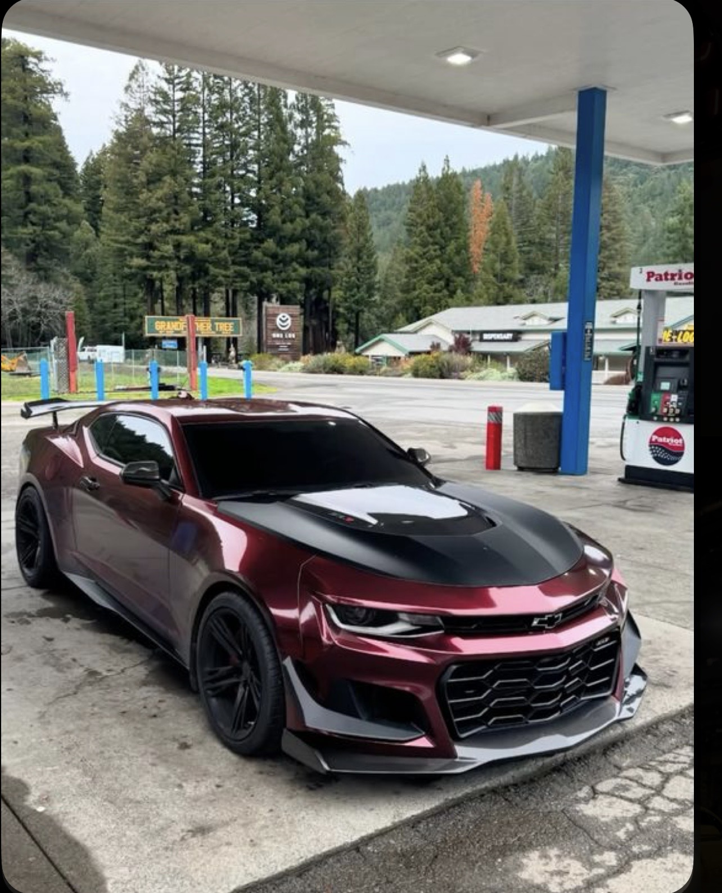

💥 El sonido Arranca y el V8 habla por ti. Grave, brutal, adictivo. Aunque vayas despacio, se siente poderoso. 🚀 Potencia de verdad Empuja desde abajo sin pedir permiso. No necesitas ir a fondo para sonreír… pero cuando lo haces, se pone salvaje. 😈 Carácter No es fino, es rudo. No intenta ser europeo ni silencioso. Es músculo americano puro. 🛞 Sensación al manejar Sientes el torque en el cuerpo, el volante vivo, el carro queriendo soltarse si le pisas de más. Te mantiene alerta. 👀 Respeto en la calle Un Mustang V8 impone. La gente sabe lo que es, y lo reconoce al instante.
Lo mejor de tener un Mustang… es el día que lo vendes. Porque ese día dejas de manejar un carro que vive de recuerdos y te compras un Camaro, un carro de verdad. El Mustang presume historia. El Camaro presume resultados. Uno hace ruido para verse rápido. El otro es rápido aunque no haga ruido. Cuando el camino se pone serio, cuando hay curvas, agarre, control y huevos… el Mustang duda. El Camaro aprieta. El Mustang es para posar. El Camaro es para manejar. Y no es odio, es realidad: el Mustang quiere atención, el Camaro quiere ganar.
